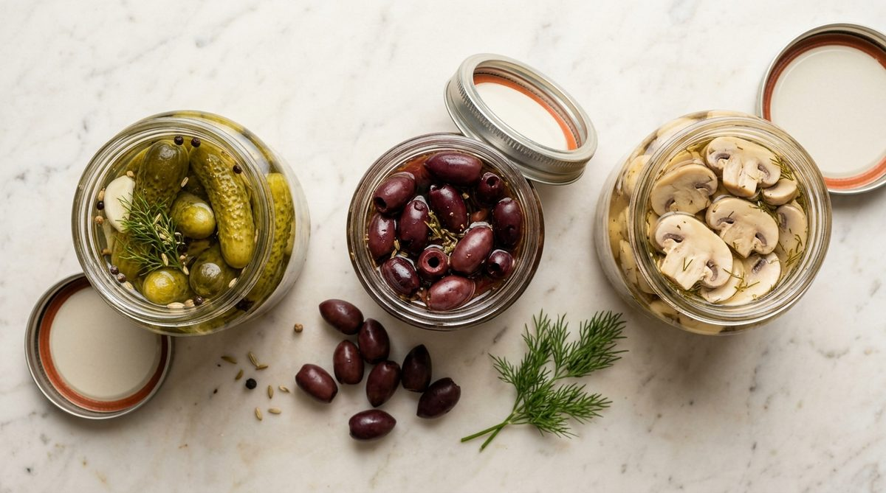

Ciuperci, castraveți murați, măsline, compot și alte conserve pentru restaurante și catering.

Ciuperci tăiate sau întregi, conservate. Ideale pentru pizza, paste și garnituri.
Cereți ofertăMăsline negre cu sau fără sâmbure, conservate. Utilizare diversă în bucătărie.
Cereți ofertăCompot de fructe în borcane sau conserve mari. Pentru deserturi și băuturi.
Cereți ofertăCompletați formularul de contact și vă vom răspunde în cel mai scurt timp.
Contactați-ne